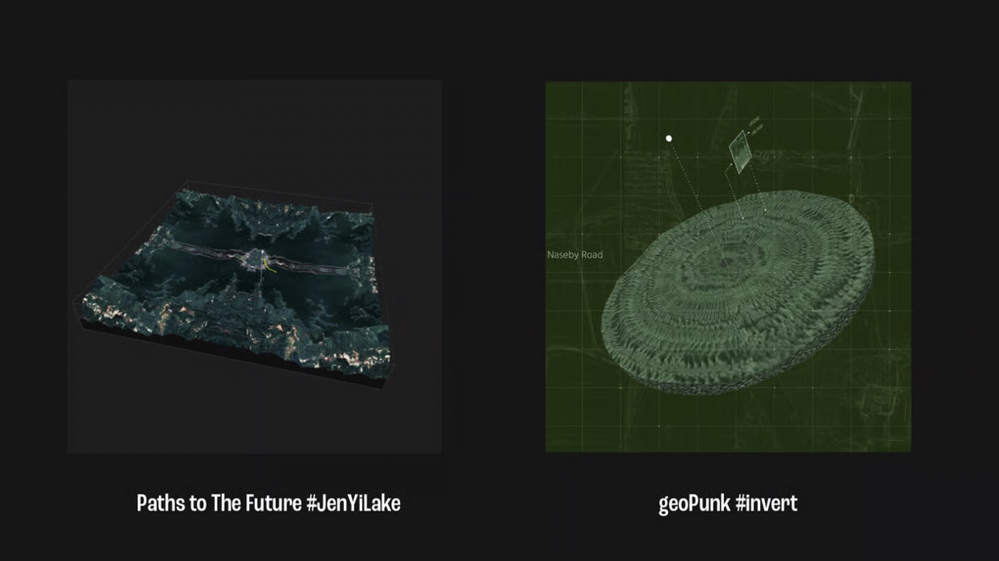

← 返回投影片
Paths 系列 路徑三部曲
Paths to the Past · Paths to the Future · GeoPunk
昨日的路徑 — Paths to the Past
空拍、三維實景、田野錄音、顆粒合成。程式即時演算，景觀輪番交錯，固有的地貌長出流動的新面貌。
你選擇收集什麼資料、怎麼 mapping，就決定了歷史長什麼樣子。
藝術家和歷史學家做的是同一件事——選擇，然後解讀。
昨日的路徑 — Paths to the Past
明日的路徑 — Paths to the Future
以台灣地形為基底，用波函數塌縮（wave function collapse）演算法疊加出新的國土想像。
台灣被不同政治實體佔領過，每個政權劃出不同的疆域。
邊界不是固定的線，是時刻在塌縮的波函數。
一個事實，不同解讀——演算法回應的正是這件事。
明日的路徑 — Paths to the Future
邊界漫遊 — Roaming in the Path
藝術家透過演算法在衛星地圖上進行點對點的移動，跨越山巒、海洋，跳躍在洲及島。聚焦在由各種原因形成的邊界路徑——一種對不同理念產生的輪廓。
邊界提供了另一個方法觀看核心。相同的地點，在政治上卻映射出全然不同的關係。
作品探討的不僅是你決定從哪個方向觀看遠方，更多的是——處於怎樣的地點，決定了你凝視的方向。
邊界漫遊 — Roaming in the Path｜國立臺灣美術館（2020）
地誌龐克 — GeoPunk（2021）
Paths 系列的番外篇。我最早的區塊鏈生成藝術作品。「地誌龐克」——重新探索地理空間的定義。以「龐克」為名，挑戰疆界切分。
159 個地址橫跨北京、台灣、美國、英國、加拿大。GPS 座標封裝進 JSON，聲音與敘述以摩斯電碼加密。程式隨機抽取經緯度，拉取衛星影像，GLSL shader 將地表紋理位移、撕裂、重組。
JSON 座標
→
衛星影像
→
GLSL Shader
→
3D 幾何體
→
🏔 地景雕塑
+
摩斯電碼

GeoPunk — 衛星地貌經 GLSL shader 位移生成的 3D 地景雕塑
GeoPunk — IPFS LIVE DEMO
每一件作品都是一次對地球表面的儀式性採樣。
國界消融，衛星的凝視經演算法轉譯，成為無法被複製的數位地層。
同一份座標，可以被讀成地景，也可以被讀成敘事。